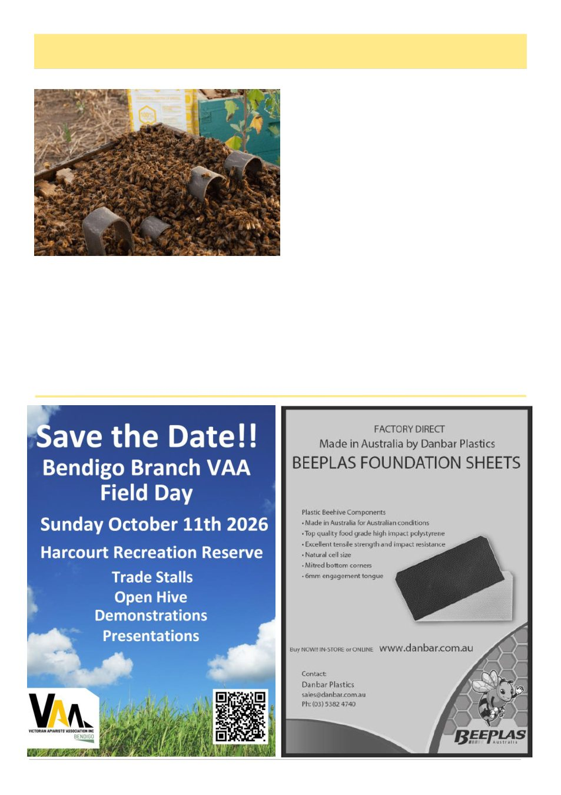

August 2026
13
Resistant Varroa, Fewer Legal Tools And A Harder Road Ahead, cont’d
otherwise been tempted to make home-made oxalic
strips with inconsistent dose, absorbency and release
rate. A manufactured product is safer and more stand-
ardised. However, the current permit conditions are
restrictive. Aluen CAP is to be left in place for 42 days,
must only be used once a year, and must not be used
over two consecutive treatment periods.9,11 That creates
a major gap when resistant mites may require repeated
non-synthetic control through the season.
This is where advocacy is needed. Australia needs
more than emergency permits and a handful of con-
strained products. We need faster approval pathways
for safe, standardised non-synthetic treatments. We
need practical legal access to oxalic acid and formic
acid methods that are already widely used overseas.
We need clear national guidance that recognises Aus-
tralian climates, brood cycles and pollination move-
ments. We also need regulators to recognise that the
risk of having too few legal options is not theoretical. It
is already here.
Recreational beekeepers are often told, correctly, not
to use unapproved treatments. But that message must
be matched with legal options that actually meet field
conditions. It is not good enough to say ―follow the
label‖ if the legal label leaves beekeepers without a
workable plan for large parts of the season. Compli-
ance becomes harder when legal pathways are too nar-
row. If industry and government want beekeepers to
remain within the system, the system must provide real-
istic tools.
For now, beekeepers need to manage with what is
legal. The foundation is monitoring. Alcohol wash or
soapy water wash remains the most reliable practical
method for mite counts. Sugar shake is less reliable and
is no longer easy to defend as harmless. Each apiary
should be monitored before treatment, and the same
(Continued from page 12)
(Continued on page 14)
Aluen CAP
The Legal Oxalic Acid Strip 42-day Treatment
Image by AluenCAP